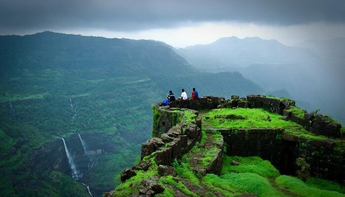

3<HTML>
<BODY bgcolor="black">
	<center></center>
		<MAP NAME="R">
			<AREA SHAPE="RECTANGLE" COORDS="3,2,638,359" HREF="MAP.HTML"></center><br></A>
			</CENTER>
	<font color="white"><H1>HISTORY</H1><hr>
	<P><b><font size=6 color="red">HISTORY </b></font>A hill station is a town located at a higher elevation than the nearby plain or valley. The term was used mostly in colonial Asia (particularly India), but also in Africa (albeit rarely), for towns founded by European colonial rulers as refuges from the summer heat, up where temperatures are cooler. In the Indian context, most hill stations are at an altitude of approximately 1,000 to 2,500 metres (3,300 to 8,200 ft); very few are outside this range
</P></font>
	<center><A HREF="FRAMESET.HTML" TARGET="FRAMESET">HOME</A></center>
</body>
</html>